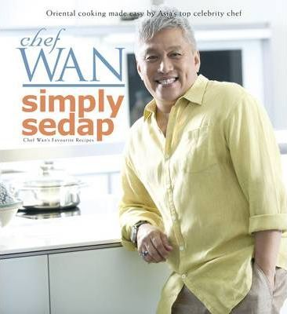

Chef Wan Around the World : The Best Recipes From Asia's Most Celebrated Chef
This is a collection of 86 recipes which charts Chef Wan's travel over the past two decades in Asia, the Middle East, the Mediterranean and Caribbean, Europe and the United States.
This book also give an account of his encounters as a student, meeting with other chefs and his adventures dining at restaurants and cafes during his travels.
Chef Wan also include tips and suggestions to ensure that anyone can create delicious mails easily and successfully from his collection of recipes.
Publication date: 10 Mar 2009

Simply Sedap
Malaysia's most popular food ambassador Chef Wan shares his favourite recipes for more than 180 savoury dishes. Culled from his culinary adventures both at home and abroad over
the last thirty years, these exciting recipes include all-time favourites like Tod Mun Pla (Thai Fish Cakes), Wantan Soup with Japanese Bean Curd and Bubur Menado (Menado Vegetable Porridge), and adventurous dishes such as Kalio Udang Tempoyak
(Prawn in Preserved Durian Gravy), Umai Ikan (Sarawak Raw Fish Salad), Vietnamese Chicken with Mint and Ohnokaukswe (Burmese Curry Noodles). Packed with personal anecdotes,
cooking tips and appealing recipes, this book will be a delight not just for the novice cook but for the seasoned cook as well.
Publication date: 01 Jan 2012
The Best of Chef Wan
Malaysia's Culinary Ambassador and Asia's most notable chef Chef Wan shares 138 of his favourite Asian recipes in his latest book, The Best of Chef Wan.
With a full range of recipes including curries, stir-fries, braises, soups, noodle and rice dishes as well as snacks
and desserts, The Best of Chef Wan is set to be Chef Wan's best cookbook yet.